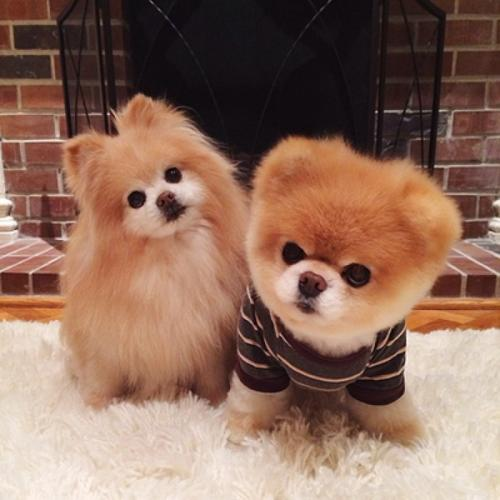

文章
心灵励志： 狼性的心态，就是冷静地克制自己
歌德曾说过，“谁不能克制自己，他就永远是个奴隶”。心灵励志： 狼性的心态，就是冷静地克制自己
和同事相处要克制自己，不吹毛求疵，不斤斤计较，宽大为怀，不强人所难。
和领导相处，要诚实，不打小报告，体谅领导的难处。
和家人相处，要摆摆正自己的位置，尽到自己的责任，调节气氛，使全家其乐融融。
和学生相处，要严慈相济，与学生交心，不动辄发脾气。
与小动物相处，要有怜悯之心，善待每一个小动物，珍爱生命。
与知识相处，要像猛虎一样，贪婪一些；要像蜜蜂一样，勤劳一些；也要像游鱼一样在知识的海洋里游得轻松一些；也要像大雁一样在慰蓝的天空中行走出自己的“人”字来。
和地球相处，时时怀有感恩之心，因为生命中的每一滴水，食粮中的每一点绿，无不是大地母亲的乳汁。
和蓝天相处，激励自己拥有宽广的心胸，努力克服狭隘自私。
与恨过的人相处，让我懂得了什么是胸怀，什么是宽容，什么是励志，什么是坚强，什么是冷静，什么是达观，什么是人生。
©2019 ALL Right Reserverd